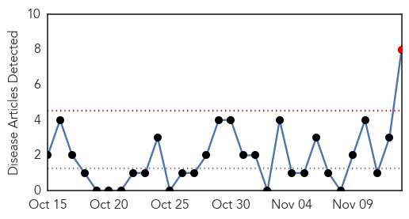
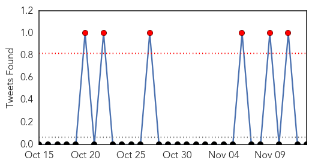

Pertussis
30-Day Web Trend
1 alerts, 0 warnings

30-Day Twitter Trend
0 alerts, 0 warnings

Article Locations

Article Confidences

Top Articles:
- 0.994
- Malaria spreading in the west of Darfur, while whooping cough in the north of Darfur
- 0.978
- Canada seeing outbreaks of pertussis. Is waning immunity from shots one reason?
- 0.975
- News Talk Sports :: Canada seeing outbreaks of pertussis. Is waning immunity from shots one reason? :: National News
- 0.975
- Canada seeing outbreaks of pertussis. Is waning immunity from shots one reason?
- 0.970
- Canada seeing outbreaks of pertussis. Is waning immunity from shots one reason?
- 0.969
- Whooping cough is back
- 0.876
- Areas across Canada seeing outbreaks of whooping cough
- 0.627
- Whooping cough on the rise
Top Tweets:
-
No tweets found for Nov 13, 2015
Influenza
30-Day Web Trend
0 alerts, 0 warnings

30-Day Twitter Trend
6 alerts, 0 warnings

Article Locations

Article Confidences

Top Articles:
- 1.000
- Flu prevention education works you may not know
- 0.986
- Permanent Flu Vaccine Under Development, Could Eliminate Annual Shots
- 0.983
- Confronting Dangerous Viruses is Alumna's Mission
- 0.935
- Sask. doctors get vaccinated at association meeting - Saskatoon
- 0.887
- MPP Dipika Damerla rolls up her sleeve for flu shot
- 0.751
- November 13, 2015 Archives
- 0.751
- November 12, 2015 Archives
- 0.751
- November 12, 2015 Archives
Top Tweets:
-
No tweets found for Nov 13, 2015